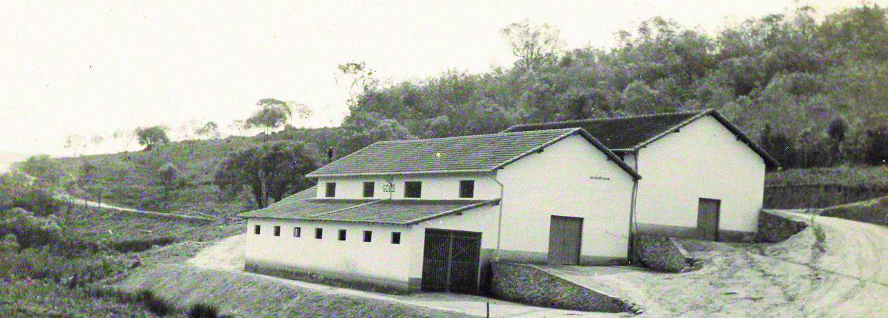

Nossa História
Descendente de imigrantes portugueses, o casal Benedito Moraes de Monte e Maria das Dores Lima de Monte lavrou terras desde os sertões da Vila de Una até Piedade, região hoje situada entre as cidades de Ibiúna e Piedade. Na primeira década do século passado, estabeleceram-se em São Roque, no bairro de Canguera. Foram nessas terras férteis, de clima rigorosamente frio e seco, que encontraram as condições ideais para lançarem de vez suas raízes em solo brasileiro, construindo assim uma grande família.